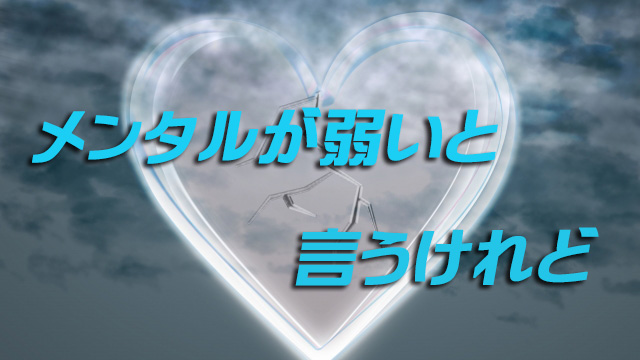

たまたま学校の部活などでスポーツ指導をする人たちと話す機会があり、皆どうしたら選手（子どもたち）の自信を引き出せるか悩んでいることが分かった。技術が優れていたり、練習などでは良い結果を出すのに、いざ本番となると力を発揮できない。ひどい子になると持っている力の半分も出せない場合がある。逆にそれほど技量がなくても本番に強いタイプもいる。
その違いは何なのか。力を発揮できない子は要するに「メンタルが弱いのか」という話だった。
私はこれを聞いて少し違和感をもった。確かに私も勉強を教えていて、よく努力しているのに本番（入試）に弱い子を「メンタルが弱い」などと言うことがある。
しかし「メンタルが弱い」と一言で片づけてしまうのは、指導する側の怠慢とは言わないまでも「逃げ」であると思うからだ。
メンタルも技量や体力と同じく強化することができる。単にメンタルが「強い・弱い」と言ってしまうと生まれつきの才能のせいにして指導を放棄しているかに聞こえてしまう。
しかしそうは言ってもメンタルを強化して自信を持たせることはやはり難しい。
一般に信じられている「過去の成功体験が自信を生む」という説は、あまり成功体験のない普通の人には当てはまらないし、過去の成功にとらわれ過ぎてかえって足を引っ張られることにもなりかねない。
では、どうすれば自信はつくのか。
これはメンタルという、精神や心のあり方の観点からいうとセルフイメージをまず高めるということになる。
セルフイメージが高まれば自信も高まり、自信が高まれば「良い成績」を出す可能性も高まる。だからセルフイメージの高い低いがまず重要になる。セルフイメージは誰でもが心中に抱く「自分とはこういう人間だ」という思い込みのことだ。
「自分はいつも肝心なときに力を発揮できない」とか「自分はあわて者だから失敗しやすい」「自分は算数ができない」などは典型的なマイナスのセルフイメージである。
心理学的にいえば、人は自ら設定した「限界」を超えて能力を発揮することはできない。つまりセルフイメージとは「設定された限界」であり思い込みということになる。
ということはこうもいえるはずだ。
いつかどこかで設定したものである以上、設定を解除することもまた可能だということ。すなわちセルフイメージは「書き換えが可能」ということだ。
その「書き換え」こそがスポーツ指導者や教師の仕事となる。
セルフイメージは変えられる
セルフイメージを肯定的なものに書き換える方法はいくつかある。細かいテクニックは省くが、私自身やってみて有効だったのはゴールをイメージするやり方だ。
自分が望んでいるゴール、たとえば試合に勝つとか試験に受かるとかの最終目標が達成された瞬間をできる限り鮮明にイメージする方法である。「イメージトレーニングのこと？」と思うかも知れないが、従来のヴィジュアル化（視覚化）を一歩進めて、そのときの感覚や感情をすべて体感してもらうのが良いと思っている。
何が見えるか。どんな音が聞こえているか。どんな気持ちか、ワクワクか静かな興奮か。体に感じる風の感触はどうか。どんな匂いがするか。
つまり五感のすべてを使ってその状況にいる自分を体感してみる。頭で考えるのではなくその状況と完全に一体化することが重要だ。ただ、ここまでなら従来のイメージトレーニングでも行われている。私の場合はもっと先まで進める。
そのとき誰が喜んでいるか！誰と共に喜び合っているかをイメージしてもらう。
自分が「達成」したときそれを喜ぶのは誰だろうか。その姿までを鮮明にする。両親か？監督か？仲間か？励ましてくれた先輩たちか？
人は自分のためだけでは頑張り続けることはできない。誰かのためや何か（理想や信念）のためにという大義があるとき大きな力を発揮できる。「試合に勝つ」とか「合格する」だけというエゴイスティックな目標だと執着心（野心）ばかり肥大しカラ回りしがちだ。そもそもセルフイメージが高まらない。
自分の成功が多くの人の喜びであると知れば「自分はそれに値する人間だ」という自己評価も上がる。この「自分は○○に値する」という肯定的確信こそがもっとも大事といえる。だから逆にいえば、この確信が持てるなら方法は何でもよいということになる。
セルフイメージを高める法
私はこの「肯定的確信」を導く方法として次のことを勧めている。
それはくつろぎ、安心、喜びの感覚を今までの経験（記憶）から引き出してリストに分類し、いつでもその感覚を呼び起こせるようにするというもの。たとえば「くつろぎ」なら、いつか訪れた田舎の草原に寝ころんで見上げた青空や日常の家族団らんのひとときを思い出すでも良い。
「安心」なら、幼いころ道端を母親に手を引かれて歩いたときの守られているような感覚。
「喜び」なら、友人と初めて訪れたディズニーランドで一日過ごした時間とか、友人や先生に何かでほめられたときの感覚など。
これらの記憶を各々ノートに具体的に書き出し、絵にするなどしていつでもその感覚を引き出し浸れるようにする。
私はこの作業をやりながら涙が止まらなくなったことがある。それは次々と忘れていた記憶が掘り起こされよみがえった結果、自分が親や先生、近所のオバさんなどいかに多くの人に支えられ守られてきたか思い知らされたからだ。恥かし気もなく言うなら「自分はたくさんの愛に包まれていた」という感覚だった。
人は不足にばかり目が行きがちだ。そして他者から言われたイヤなこと、否定的言動はよく覚えているのに他人から受けた親切、優しさは忘れがちだ。「傷つけられた」という思いはいつまでも鮮明なのに、遠くから見守ってくれた人の優しさには気づかない。こういう私たちの傾向こそがセルフイメージを傷つけている要因ということにも。
だからこのような作業が必要なのだと私は思っている。「くつろぎ」「安心」「喜び」のリスト作りは、本当の私たちがどういう存在なのかを改めて分からせてくれる。これら記憶から抽出した感覚に浸ることで私たちは「世界に受け入れられている」「今まで守られてきた」という真実を理解するに至る。
そしてこの作業を進めると自然と「自分を受け入れる」ことができるようになる。肯定的感情とは一口で言うなら自分を受け入れることに他ならない。セルフイメージの高低は自分を受け入れる度合いにかかっているからだ。
子どもや若者を指導する立場にある人は、すぐに「メンタルが弱い」と決めつける前に自信の源泉であるセルフイメージを高めることにもっと努めて欲しいと思う。セルフイメージは決して不変ではなく変えられると知って欲しい。
そして子をもつ親の皆さんには、子どものセルフイメージを高めるために日頃から肯定的ことばづかいを意識して使って欲しい。私たちはともすれば我が子に「あなたはいつも○○なんだから」と決めつけた言い方をしがちだ。その否定的決めつけは子どものセルフイメージ形成に大きな影響を及ぼす。決めつけは先に言った「限界を設定」する原因となるからだ。
とはいえ、あまりビクビク恐れる必要はない。ただ「我が子の潜在能力は見えている部分よりはるかに大きい」と信じてあげれば良い。その上でいつも子どもを大きく愛で包むように育てて欲しい。